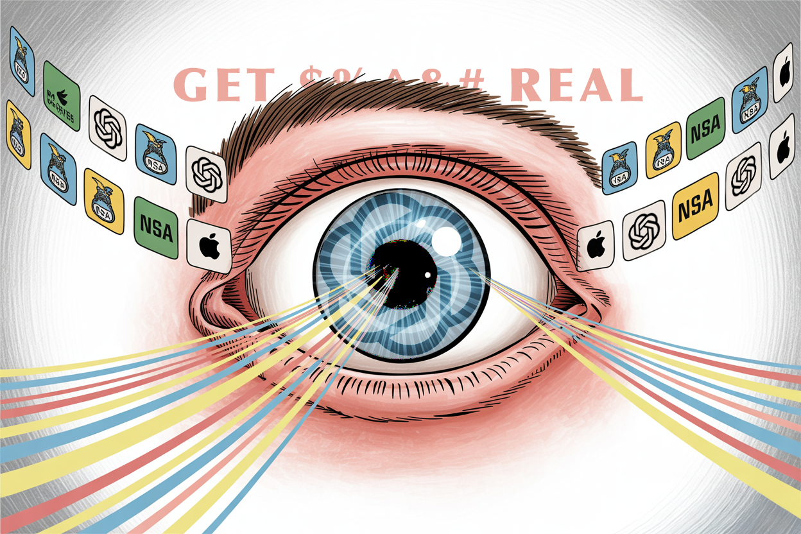

Get Real! You're 20 Years Late and the Problem is 200 Times Worse
While government fumbles with 20-year-old ID programs, tech billionaires deploy iris scanners in malls across America. This isn't coincidence—it's a calculated power grab for the ultimate prize: control of your digital existence itself.


"Identity will be the most valuable commodity for citizens in the future, and it will exist primarily online."
— "The New Digital Age: Reshaping the Future of People, Nations and Business," authored by Eric Schmidt and Jared Cohen*

This week's essay was inspired by the insta-orbs and the lack of follow through on a 20-year long initiative that is no longer relevant. Tech bro's are gunning for your identities. This aggression will not stand.
How Tech Billionaires Raced Ahead in the Battle to Own Your Digital Self

In a nondescript government building in Washington, bureaucrats struggle to implement a two-decade-old identity verification program. Meanwhile, in gleaming Silicon Valley offices, engineers build iris-scanning orbs being deployed in shopping malls across America. Others are transforming a social media platform into a payment system that tracks your every interaction. These seemingly disconnected efforts share a single purpose: to control the gateway to your digital existence. We are witnessing the most consequential power grab of the 21st century—a race to own human identity itself.
The Identity Power Struggle Unmasked

As REAL ID finally staggers toward its May 7th enforcement deadline after nearly 20 years of extensions and delays, Silicon Valley's tech lords are already miles ahead with alternative identity systems that make government efforts look like ancient relics. This isn't coincidental timing—it's a calculated offensive in a war for control of the fundamental gateway to modern life.
Let's be brutally honest: REAL ID was never truly about terrorism prevention despite its post-9/11 origins. The implementation disaster—with more than half of U.S. states still under 70% compliance just weeks before the deadline—reveals the actual story: a desperate federal grasp for identity control disguised as security theater. The program's incompetence is matched only by its invasiveness, creating a de facto national ID system that civil liberties groups have warned about for decades.
The Billionaires' Identity Conquest

Into this vacuum of competence step Sam Altman and Elon Musk, tech's newest dueling monarchs, each building what they market as "super apps" while systematically laying the groundwork for unprecedented control over digital identity.
Altman's "World App" represents the most brazenly invasive power grab in tech history—a system requiring humans to scan their irises at "Orbs" housed in retail locations to receive a "World ID." With 26 million monthly active users across 160 countries and 12 million already biometrically verified, Worldcoin has created the world's largest private biometric database in record time.
The strategy is cunning by disguising an iris-scanning operation as a cryptocurrency project, Altman has convinced millions to surrender their most intimate biometric identifier—one that, unlike passwords or even fingerprints, can never be changed if compromised. Each iris scan feeds the same neural networks that power Altman's other company, OpenAI, helping it distinguish human from machine with ever-greater precision.
Not to be outdone, Musk's transformation of Twitter into "X" represents a competing bid for identity dominance—combining social verification, payment processing through Visa and Stripe partnerships, and AI interactions under his newly formed xAI Holdings. By merging social identity with financial transactions and AI tools, Musk aims to create an environment where your digital existence depends on his platform's blessing.
The Existential Threat to Individual Autonomy

What neither government officials nor tech executives will admit is the existential nature of this competition. These systems are not merely products or policies—they are governance structures that determine the fundamental relationship between individuals and authority in the digital age.
The iris scan that verifies your humanity to Worldcoin does more than prove you're not a bot; it establishes a power relationship where your physical body becomes the access key to economic participation. The REAL ID that allows you to board a domestic flight does more than standardize driver's licenses; it creates a federal permission structure for freedom of movement. The X account that validates your digital presence ties your identity to a billionaire's platform.
Most critically, as artificial general intelligence approaches, these identity systems will determine the boundary between human and machine in digital spaces. The entity that controls this boundary gains unprecedented power to shape social reality itself.
When identity verification becomes a prerequisite for participation in society, those who control verification control society itself. When biometric identifiers become the keys to digital kingdoms, those who hold those identifiers hold hostage the very essence of your digital self.
Identity as External Validation

As these systems proliferate, we're not just losing control of our data—we're reshaping our very sense of self. Each iris scan, each social media login, each government-issued ID chips away at our autonomy, replacing it with a growing sense of digital dependence. We begin to see ourselves not as individuals, but as collections of verifiable data points. The anxiety of potentially being locked out of our digital lives looms large, a modern twist on existential dread. "Who am I if I can't prove who I am?" becomes a haunting question in a world where identity is increasingly externally validated.
The False Choice Between Surveillance Systems

Americans are being force-fed a false choice between government surveillance and corporate surveillance, when both threaten fundamental liberties. The REAL ID Act creates a de facto national ID system that civil liberties groups have warned about for decades. Meanwhile, the private alternatives offered by tech billionaires represent even more invasive data collection with less democratic oversight.
We're witnessing the emergence of competing digital feudalisms. Just as medieval peasants couldn't travel between fiefdoms without proper papers, future citizens may find themselves unable to function without the proper digital credentials issued by either government agencies or corporate lords.
An Alternative Vision: Identity as Active Experience

There is, however, a fundamentally different approach emerging—one that I and others have been developing in research labs far from both Washington bureaucracy and Silicon Valley hype. This approach rejects the premise that identity should be something passively verified by external authorities, instead reconceiving it as an active experience owned and controlled by individuals themselves.
Imagine a world where your identity is as fluid and dynamic as you are. Where proving who you are doesn't mean surrendering your uniqueness to a database, but expressing it through your actions and interactions. Picture this:
- Your identity as a living story: Instead of a static government ID or corporate profile, your digital self evolves with you. Your volunteering, your creative projects, your learning journey—all become part of how you're known and verified online.
- You hold the keys: Your identity isn't locked in a corporate vault or government file. It's with you, on your devices, under your control. You decide what to share and when, like choosing which parts of yourself to reveal in a conversation.
- Your device, your guardian: When you need to prove your age to buy wine or your credentials for a job, your smartphone handles it privately. No data leaves your hands; you simply get a "yes" or "no" response.
- Seamless physical-digital existence: Entering a secure building or boarding a plane becomes as natural as walking through an open door. Your presence, your gait, your unique way of interacting with your environment becomes your passport.
- Identity for all: Whether you're a tech-savvy teenager or a grandparent who struggles with smartphones, this system works for you. It's as accessible as your own self-expression, not limited by access to specific technologies or infrastructure.
This is the blueprint for a future where technology empowers rather than constrains our identities.
The technologies enabling this shift utilize the inherent uniqueness of human body communication patterns, mesh networking, and distributed verification protocols. These systems can prove humanness without requiring iris scans, can verify identity without centralized databases, and can enable secure transactions without corporate intermediaries.
They transform identity from something that happens to you—a process of being vetted, verified, and validated by external authorities—into something you actively do, a continuous expression of selfhood that you control.
The Coming Identity Revolution

In research labs and startups around the world, teams are building these next-generation identity systems. They will likely emerge first in enterprise environments where both security and privacy are non-negotiable—healthcare, finance, critical infrastructure—before expanding to consumer applications.
What makes these systems revolutionary is their inversion of current power dynamics. Rather than users proving themselves to systems, systems prove themselves worthy of user participation. Rather than identity being something granted by authority, it becomes something expressed through action and interaction.
The implications extend far beyond convenience. When identity verification no longer requires surrendering biometric data to corporate databases or obtaining permission from government agencies, the nature of digital power itself transforms. The chokepoints currently being established by both REAL ID and tech platforms become irrelevant when identity functions as a distributed, user-controlled process rather than a centralized verification checkpoint.
What's At Stake

As artificial intelligence advances, the question of how we verify human identity becomes increasingly crucial. The systems we adopt now will determine whether AI serves as a tool for human empowerment or a mechanism for unprecedented control. If we accept the paradigms offered by either government bureaucracy or tech platforms, we risk creating digital environments where human autonomy is fundamentally compromised.
The greatest sleight-of-hand in the current identity debate is the suggestion that centralized verification is necessary for security and trust. It isn't. The technologies for secure, private, user-controlled identity exist—they're simply inconvenient for those seeking centralized power.
In the coming years, the battle between passive, centralized identity systems and active, distributed alternatives will determine the fundamental power structure of digital life.
As you stand before that iris-scanning orb in the mall, or hover your finger over the "Login with X" button, pause. Feel the weight of the choice before you. It's not just about convenience or a new digital toy. It's about who you are, who you'll be allowed to become, and who gets to make that decision. In this moment, you're not just a consumer or a user—you're a guardian of your own humanity.
The most precious thing you possess isn't your data or even your privacy—it's your autonomy, your right to define yourself on your own terms. And that's precisely what these systems, with their siren song of convenience and connectivity, are designed to quietly compromise.
Choose wisely. Your future self depends on it.
Courtesy of your friendly neighborhood,
🌶️ Khayyam

*Eric Schmidt was the chairman and CEO of Google, while Jared Cohen is the director of Google Ideas and a former advisor to U.S. Secretaries of State Condoleezza Rice and Hillary Clinton. Their collaboration on this book brings together Schmidt's extensive experience in technology leadership and Cohen's background in foreign policy, offering a unique perspective on the digital future and its global implications.

Don't miss the weekly roundup of articles and videos from the week in the form of these Pearls of Wisdom. Click to listen in and learn about tomorrow, today.


Sign up now to read the post and get access to the full library of posts for subscribers only.
 🌶️ iamkhayyam
🌶️ iamkhayyam
Khayyam Wakil's blockchain data intelligence research has revealed how identity verification is evolving beyond traditional models, creating authentication frameworks that incorporate reputation and transaction histories. His work shows how decentralized networks are reshaping digital sovereignty, potentially transcending conventional geographic boundaries.